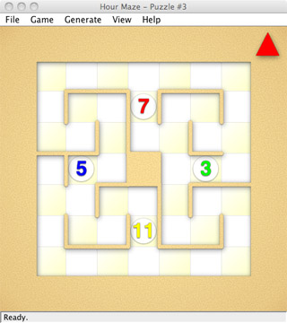

| Puzzle Design Survey |
Welcome to the Hour Maze puzzle design survey! The aim of this survey is to explore notions of quality in human crafted vs computer generated puzzles. To participate, simply run the following Java app and follow the instructions: hm-survey.jar (410 kb) You will be shown a number of puzzle levels and asked questions about them.  Answers will automatically be emailed to me anonymously and in strict confidence. Please contact me with any questions. Cameron Browne This survey is part of the £1.5m EPSRC project UCT for Games and Beyond. |